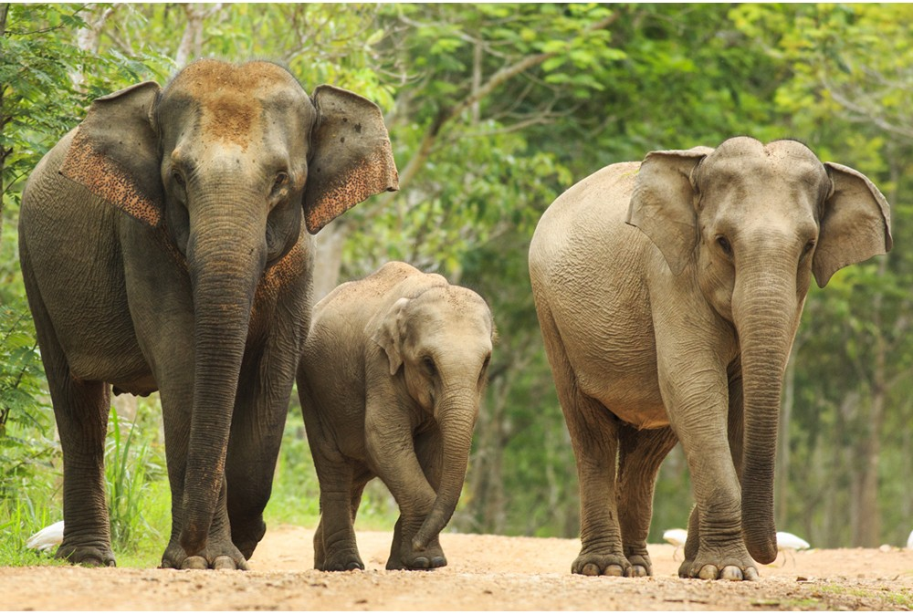

Elephants
There are three species of elephants. First there is the Asian elephant found in India and Southeast Asia. An adult male can weigh up to 8,800 pounds and stand 9 feet tall at the shoulder. An adult female can weigh up to 6,000 and stand 7.9 feet tall at the shoulder. The average life span for the Asian elephant is said to be around 40-50 years. These elephants are endangered to do mass decline mainly between 1970-1980 from being killed for their ivory. Today the greatest threat is losing their habitats of forest and grasslands due to human population increaseing and taking over the elephants homes.
There are 3 subspecies of the Asian elephant. The first is the Indian elephant that is native to mainland Asia. An adult male can weight 11,000 pounds and stand 10 feet tall. A female can weigh

Next is the African Bush Elephant which is the largest of the three species. The African Bush Elephant is also the largest land mammal in the world. An adult male can weigh up to 13,000 pounds while an adult female can weigh up to 6,600 pounds. Adults can be as tall as 13 feet and be 24 feet long. Their life span is said to be 60-70 years. There are also known as African savanna elephants. They are listed under vulnerable with population increasing although they were at risk of extinction due to hunting and poaching primarily between 1970-1990. They can be found in the savanna grasslands, forest within Central and Southern Africa, and partial desert areas.
Last is the African Forest Elephant. An adult male can weigh up to around 9,000 pounds and stand up to 10 feet tall while an adult female can weigh around the same they are shorter at up to 8 feet tall. They also have a life span of 60-70 years. These elephants are also listed as vulnerable wiht more than 60% of the population poached in the last decade. African forest elephants can be found where there is large dense forest such as central Africa, west Africa, Gabon, and the Democratic Republic of Congo.